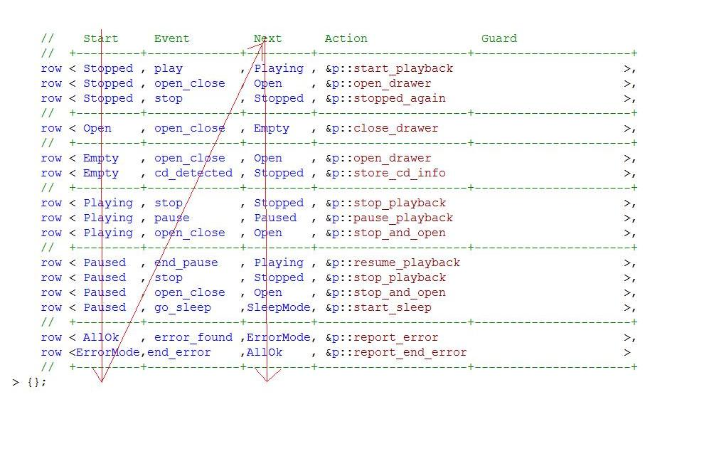

内部机制
本章描述后端的内部机制, 这些内容对 UML 专家可能有用, 但大多数用户可以放心忽略. 对于实现者, 本章还详细描述了前端与后端之间的接口.
前端 / 后端接口
MSM 的设计力求让前端与后端 (日后的后端) 尽可能互换. 当然, 任何后端都不可能实现所有可能前端定义的每个特性, 反之亦然, 但目标是让扩展库的现状尽可能容易.
为做到这一点, MSM 把功能划分到两侧: 前端是一种用户界面, 负责描述; 后端实现状态机引擎.
MSM 基于转移表构建, 因此一个具体状态机 (或给定前端) 必须提供 transition_table. 该转移表必须由行构成. 每一行必须表明自己是哪种类型的转移, 并实现对动作和守卫的调用. 状态机还必须定义自己的区域 (由初始状态标出). 这几乎就是对前端的全部约束. 行如何描述则由实现者自行决定.
每一行都必须提供:
-
一个
Sourcetypedef, 表明源状态的类型. -
一个
Targettypedef, 表明目标状态的类型. -
一个
Evttypedef, 表明触发该转移的事件的类型. -
一个
row_type_tagtypedef, 表明该转移的类型. -
类型要求转移动作的行必须提供一个静态函数
action_call, 其签名如下:template <class Fsm,class SourceState,class TargetState,class AllStates>static void action_call (Fsm& fsm, Event const& evt, SourceState&, TargetState&, AllStates&)该函数的参数包括 (后端) 状态机、事件、源状态与目标状态, 以及一个由状态机中定义的所有状态组成的容器 (在当前后端中是一个 fusion::set). 例如, 由于后端以前端作为基类,
action_call简单地定义为(fsm.*action)(evt). -
类型要求守卫的行必须提供一个静态函数
guard_call, 其签名如下:``template <class Fsm,class SourceState,class TargetState,class AllStates>static bool guard_call (Fsm&, Event const&, SourceState&, TargetState&, AllStates&) -
可能的转移 (行) 类型有:
-
a_row_tag: 带动作、无守卫的转移
-
g_row_type: 带守卫、无动作的转移
-
_row_tag: 无动作也无守卫的转移
-
row_tag: 带守卫和动作的转移
-
a_irow_tag: 带动作的内部转移 (定义在
transition_table中) -
g_irow_tag: 带守卫的内部转移 (定义在
transition_table中) -
irow_tag: 带动作和守卫的内部转移 (定义在
transition_table中) -
_irow_tag: 无动作也无守卫的内部转移 (定义在
transition_table中). 由于内部转移优先级更高, 这相当于“忽略事件” -
sm_a_i_row_tag: 带动作的内部转移 (定义在
internal_transition_table中) -
sm_g_i_row_tag: 带守卫的内部转移 (定义在
internal_transition_table中) -
sm_i_row_tag: 带动作和守卫的内部转移 (定义在
internal_transition_table中) -
sm__i_row_tag: 无动作也无守卫的内部转移 (定义在
internal_transition_table中). 由于内部转移优先级更高, 这相当于“忽略事件”
-
此外, 前端必须提供状态与状态机的定义. 状态机定义必须提供 (实现者可以自行提供, 也可以交给每个具体状态机完成; 不同的 MSM 前端分别采取了其中一种做法):
-
initial_state: 该 typedef 可以是单个状态或一个 mpl 容器, 提供定义一个或多个正交区域的初始状态. -
transition_table: 该 typedef 是由转移行组成的 MPL 序列. -
configuration: 该 typedef 是由已知类型组成的 MPL 序列, 这些类型会在后端触发特殊行为, 例如某个具体 fsm 需要消息队列或异常捕获.
状态与状态机都必须提供以下各项的 (可能为空的) 定义:
-
flag_list: 当该状态或状态机成为 fsm 的当前状态时被激活的标志. -
deferred_events: 当该状态是 fsm 的当前状态时被自动延迟的事件. -
internal_transition_table: 该状态的内部转移. -
on_entry和on_exit方法.
生成的状态 id
通常, 人们不需要知道状态机的所有状态都会生成 id, 除非出于调试目的, 比如教程中的 pstate 函数为了显示当前状态的名称就用到了它. 本节将展示如何自动显示 typeid 生成的名称, 但这些名称在部分平台上可读性不高, 因此了解 id 的生成方式会有所帮助. id 使用转移表生成, 从 Start'' column up to
down, then from the Next'' 列自上而下进行, 如下图所示:

元编程工具
转移表的用途比我们迄今为止看到的还要多. 假设你需要编写一个覆盖率工具. 状态机本应是这项工作的完美之选, 只要它能提供一些关于自身结构的信息. 得益于转移表和 Boost.MPL, 它确实可以.
覆盖率工具需要什么? 你需要知道状态机中定义了多少个状态, 以及能触发多少个事件. 这样你就可以记录一台具体机器在其生命周期内触发的事件和访问的状态, 从而进行一些覆盖率分析, 例如``触发了全部可能事件的 65%, 访问了状态机中定义状态的 80%''. 为实现这一点, MSM 提供了几个实用工具:
-
generate_state_set<transition table>: 返回表中定义的所有状态组成的 mpl::set.
-
generate_event_set<transition table>: 返回表中定义的所有事件组成的 mpl::set.
-
使用 mpl::size<>::value 可以得到集合中的元素个数.
-
display_type 定义了一个 operator(), 把 typeid(Type).name() 发送到 cout.
-
fill_state_names 用所有状态的名称 (通过 typeid 找到) 填充一个 char const* 数组.
-
对 generate_state_set 和 generate_event_set 的结果使用 mpl::for_each 并传入 display_type 作为参数, 将显示状态机的所有状态.
-
假设你需要递归地找出复合状态 (它们同样拥有转移表) 中定义的状态和事件. 调用 recursive_get_transition_table<Composite> 将返回该复合状态的转移表, 并递归加入所有子状态机以及子子……子状态机的转移表. 然后对结果调用 generate_state_set 或 generate_event_set, 即可得到完整的状态与事件列表.
有一个示例展示了这些工具的实际使用.